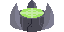

Week 6 - Gold Code

Gameplay state from the final web build prep for the showcase.
Gold Code
This week, I focused mostly on bug fixing and polish for Gold Code. I spent time cleaning up gameplay issues, stabilizing the build, and preparing the final web build for our showcase.
Most of the work was less visible than prior weeks, but it was critical for shipping. We addressed UI flow issues, cleaned up edge-case gameplay bugs, and made sure key systems behaved consistently across longer play sessions.

Medbay art
Medpack art
I also created new art for the medbay and medpack systems so rewards and recovery states are clearer during play.
Alongside bug fixing, we focused on final build prep: validating scenes, checking asset references, and making sure the web build path was stable for presentation. This was mostly production hardening work, but it gave us a much more reliable handoff for showcase day.
The main difficulty this week was cutting features we did not have enough time to finish. We had to reduce scope and prioritize stability and presentation for the showcase build.
Scope cuts were difficult because many ideas were still promising, but this was the right tradeoff at Gold Code. Prioritizing polish, bug resolution, and build stability gave us a stronger final experience than trying to squeeze in unfinished features. I'm really glad that we were able to include an arcade mode, as it adds a whole bunch of replayability to our game.